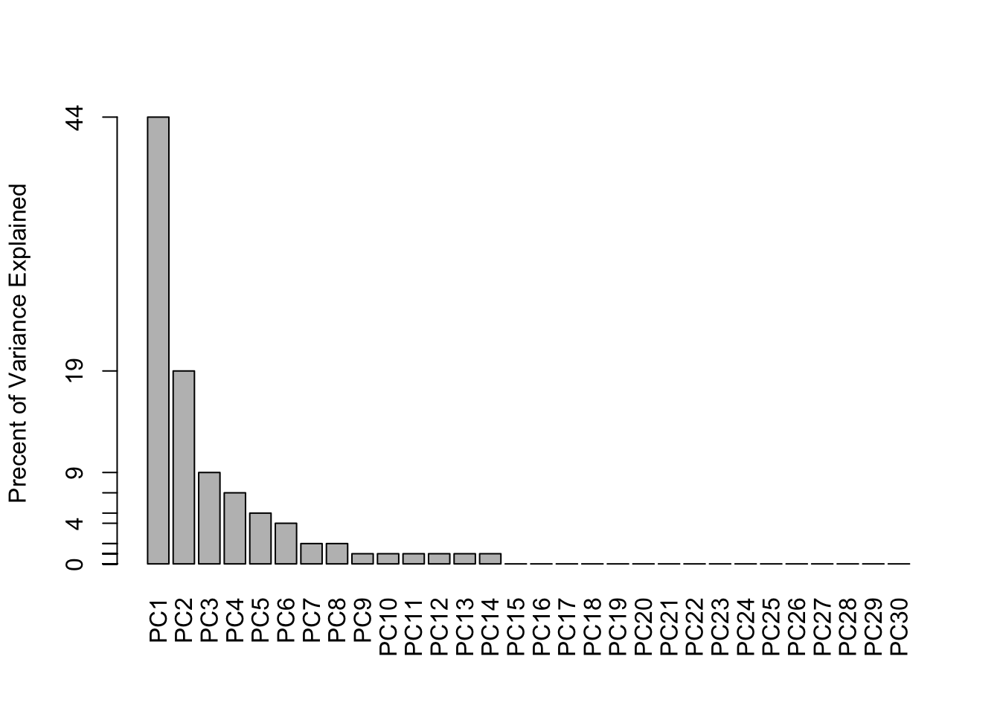
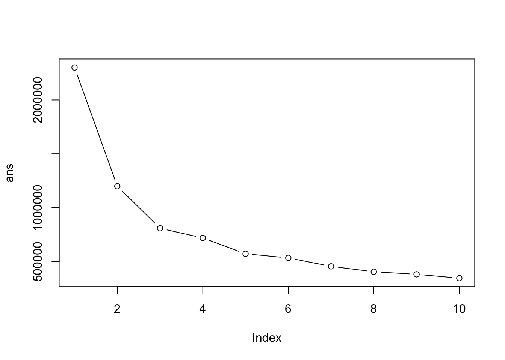

library(readr)
# Complete the following code to input the data and store as wisc.df
# sets patient id as row names too
wisc.df <- read.csv("WisconsinCancer.csv", row.names=1)
#View(wisc.df)Class08 mini project: Breast Cancer Analysis Project
Background
The goal of this mini-project is for you to explore a complete analysis using the unsupervised learning techniques covered in class. We will extend what we learned by combining PCA as a preprocessing step to clustering using data that consist of measurements of cell nuclei of human breast masses.
The data itself comes from the Wisconsin Breast Cancer Diagnostic Data Set first reported by K. P. Benne and O. L. Mangasarian: “Robust Linear Programming Discrimination of Two Linearly Inseparable Sets”.
Values in this data set describe characteristics of the cell nuclei present in digitized images of a fine needle aspiration (FNA) of a breast mass.
Data import
Make sure we do not include patient or sample id or the diagnosis for further analysis:
diagnosis <- as.factor(wisc.df$diagnosis)
# gives you everything but the first column
wisc.data <- wisc.df[, -1]
dim(wisc.data)[1] 569 30head(wisc.data) radius_mean texture_mean perimeter_mean area_mean smoothness_mean
842302 17.99 10.38 122.80 1001.0 0.11840
842517 20.57 17.77 132.90 1326.0 0.08474
84300903 19.69 21.25 130.00 1203.0 0.10960
84348301 11.42 20.38 77.58 386.1 0.14250
84358402 20.29 14.34 135.10 1297.0 0.10030
843786 12.45 15.70 82.57 477.1 0.12780
compactness_mean concavity_mean concave.points_mean symmetry_mean
842302 0.27760 0.3001 0.14710 0.2419
842517 0.07864 0.0869 0.07017 0.1812
84300903 0.15990 0.1974 0.12790 0.2069
84348301 0.28390 0.2414 0.10520 0.2597
84358402 0.13280 0.1980 0.10430 0.1809
843786 0.17000 0.1578 0.08089 0.2087
fractal_dimension_mean radius_se texture_se perimeter_se area_se
842302 0.07871 1.0950 0.9053 8.589 153.40
842517 0.05667 0.5435 0.7339 3.398 74.08
84300903 0.05999 0.7456 0.7869 4.585 94.03
84348301 0.09744 0.4956 1.1560 3.445 27.23
84358402 0.05883 0.7572 0.7813 5.438 94.44
843786 0.07613 0.3345 0.8902 2.217 27.19
smoothness_se compactness_se concavity_se concave.points_se
842302 0.006399 0.04904 0.05373 0.01587
842517 0.005225 0.01308 0.01860 0.01340
84300903 0.006150 0.04006 0.03832 0.02058
84348301 0.009110 0.07458 0.05661 0.01867
84358402 0.011490 0.02461 0.05688 0.01885
843786 0.007510 0.03345 0.03672 0.01137
symmetry_se fractal_dimension_se radius_worst texture_worst
842302 0.03003 0.006193 25.38 17.33
842517 0.01389 0.003532 24.99 23.41
84300903 0.02250 0.004571 23.57 25.53
84348301 0.05963 0.009208 14.91 26.50
84358402 0.01756 0.005115 22.54 16.67
843786 0.02165 0.005082 15.47 23.75
perimeter_worst area_worst smoothness_worst compactness_worst
842302 184.60 2019.0 0.1622 0.6656
842517 158.80 1956.0 0.1238 0.1866
84300903 152.50 1709.0 0.1444 0.4245
84348301 98.87 567.7 0.2098 0.8663
84358402 152.20 1575.0 0.1374 0.2050
843786 103.40 741.6 0.1791 0.5249
concavity_worst concave.points_worst symmetry_worst
842302 0.7119 0.2654 0.4601
842517 0.2416 0.1860 0.2750
84300903 0.4504 0.2430 0.3613
84348301 0.6869 0.2575 0.6638
84358402 0.4000 0.1625 0.2364
843786 0.5355 0.1741 0.3985
fractal_dimension_worst
842302 0.11890
842517 0.08902
84300903 0.08758
84348301 0.17300
84358402 0.07678
843786 0.12440Exploratory data analysis
Q1. How many observations are in this dataset
dim(wisc.data)[1] 569 30Q2. How many of the observations have a malignant diagnosis
sum(diagnosis == "M")[1] 212table(diagnosis) # same answer but shows all clusters!!diagnosis
B M
357 212 Q3. How many variables/features in the data are suffixed with _mean?
# grep same as unix command
# value = T prints the actual matches; and have to use length() because sum() would return the sum of each index
length(grep("_mean", colnames(wisc.data))) [1] 10# or can break it up to improve readability
n <- colnames(wisc.data)
inds <- grep("_mean", colnames(wisc.data))
length(inds)[1] 10Principal Component Analysis
The main function in base R for PCA is called prcomp(). In general you always want to scale our data prior to PCA to ensure that each feature contributes equally to the analysis. prcomp(x, scale = TRUE)
Except for very few cases, you always want to use scaling for this function.
wisc.pr <- prcomp(wisc.data, scale = TRUE)
summary(wisc.pr)Importance of components:
PC1 PC2 PC3 PC4 PC5 PC6 PC7
Standard deviation 3.6444 2.3857 1.67867 1.40735 1.28403 1.09880 0.82172
Proportion of Variance 0.4427 0.1897 0.09393 0.06602 0.05496 0.04025 0.02251
Cumulative Proportion 0.4427 0.6324 0.72636 0.79239 0.84734 0.88759 0.91010
PC8 PC9 PC10 PC11 PC12 PC13 PC14
Standard deviation 0.69037 0.6457 0.59219 0.5421 0.51104 0.49128 0.39624
Proportion of Variance 0.01589 0.0139 0.01169 0.0098 0.00871 0.00805 0.00523
Cumulative Proportion 0.92598 0.9399 0.95157 0.9614 0.97007 0.97812 0.98335
PC15 PC16 PC17 PC18 PC19 PC20 PC21
Standard deviation 0.30681 0.28260 0.24372 0.22939 0.22244 0.17652 0.1731
Proportion of Variance 0.00314 0.00266 0.00198 0.00175 0.00165 0.00104 0.0010
Cumulative Proportion 0.98649 0.98915 0.99113 0.99288 0.99453 0.99557 0.9966
PC22 PC23 PC24 PC25 PC26 PC27 PC28
Standard deviation 0.16565 0.15602 0.1344 0.12442 0.09043 0.08307 0.03987
Proportion of Variance 0.00091 0.00081 0.0006 0.00052 0.00027 0.00023 0.00005
Cumulative Proportion 0.99749 0.99830 0.9989 0.99942 0.99969 0.99992 0.99997
PC29 PC30
Standard deviation 0.02736 0.01153
Proportion of Variance 0.00002 0.00000
Cumulative Proportion 1.00000 1.00000plot main result figure
Let’s make our main result figure - the “PC Plot” or “score plot”, “ordientation plot”
library(ggplot2)
ggplot(wisc.pr$x) +
aes(x=PC1, y=PC2, col=diagnosis) +
geom_point()
Q4. From your results, what proportion of the original variance is captured by the PC1
pr.var <- wisc.pr$sdev^2
head(pr.var)[1] 13.281608 5.691355 2.817949 1.980640 1.648731 1.207357round(pr.var / sum(pr.var), 2) [1] 0.44 0.19 0.09 0.07 0.05 0.04 0.02 0.02 0.01 0.01 0.01 0.01 0.01 0.01 0.00
[16] 0.00 0.00 0.00 0.00 0.00 0.00 0.00 0.00 0.00 0.00 0.00 0.00 0.00 0.00 0.00# 0.44 captured
# check with summary
summary(wisc.pr)$importance[,"PC1"] Standard deviation Proportion of Variance Cumulative Proportion
3.644394 0.442720 0.442720 # .4427 proportion captured# Variance explained by each principal component: pve
pve <- round(pr.var / sum(pr.var), 2)
# Plot variance explained for each principal component
plot(pve, xlab = "Principal Component",
ylab = "Proportion of Variance Explained",
ylim = c(0, 1), type = "o")
# Alternative scree plot of the same data, note data driven y-axis
barplot(pve, ylab = "Precent of Variance Explained",
names.arg=paste0("PC",1:length(pve)), las=2, axes = FALSE)
axis(2, at=pve, labels=round(pve,2)*100 )
Q5. How many PCs are required to describe at least 70% of the original variance in the data?
summary(wisc.pr)$importance PC1 PC2 PC3 PC4 PC5 PC6
Standard deviation 3.644394 2.385656 1.678675 1.407352 1.284029 1.098798
Proportion of Variance 0.442720 0.189710 0.093930 0.066020 0.054960 0.040250
Cumulative Proportion 0.442720 0.632430 0.726360 0.792390 0.847340 0.887590
PC7 PC8 PC9 PC10 PC11
Standard deviation 0.8217178 0.6903746 0.6456739 0.5921938 0.5421399
Proportion of Variance 0.0225100 0.0158900 0.0139000 0.0116900 0.0098000
Cumulative Proportion 0.9101000 0.9259800 0.9398800 0.9515700 0.9613700
PC12 PC13 PC14 PC15 PC16
Standard deviation 0.5110395 0.4912815 0.3962445 0.3068142 0.2826001
Proportion of Variance 0.0087100 0.0080500 0.0052300 0.0031400 0.0026600
Cumulative Proportion 0.9700700 0.9781200 0.9833500 0.9864900 0.9891500
PC17 PC18 PC19 PC20 PC21
Standard deviation 0.2437192 0.2293878 0.2224356 0.1765203 0.1731268
Proportion of Variance 0.0019800 0.0017500 0.0016500 0.0010400 0.0010000
Cumulative Proportion 0.9911300 0.9928800 0.9945300 0.9955700 0.9965700
PC22 PC23 PC24 PC25 PC26
Standard deviation 0.1656484 0.1560155 0.1343689 0.1244238 0.0904303
Proportion of Variance 0.0009100 0.0008100 0.0006000 0.0005200 0.0002700
Cumulative Proportion 0.9974900 0.9983000 0.9989000 0.9994200 0.9996900
PC27 PC28 PC29 PC30
Standard deviation 0.08306903 0.0398665 0.02736427 0.01153451
Proportion of Variance 0.00023000 0.0000500 0.00002000 0.00000000
Cumulative Proportion 0.99992000 0.9999700 1.00000000 1.00000000# It will take 3 PCs, to get at least 70% percent of the original varianceQ6. How many PCs are required to describe at least 90% of the original variance in the data?
summary(wisc.pr)Importance of components:
PC1 PC2 PC3 PC4 PC5 PC6 PC7
Standard deviation 3.6444 2.3857 1.67867 1.40735 1.28403 1.09880 0.82172
Proportion of Variance 0.4427 0.1897 0.09393 0.06602 0.05496 0.04025 0.02251
Cumulative Proportion 0.4427 0.6324 0.72636 0.79239 0.84734 0.88759 0.91010
PC8 PC9 PC10 PC11 PC12 PC13 PC14
Standard deviation 0.69037 0.6457 0.59219 0.5421 0.51104 0.49128 0.39624
Proportion of Variance 0.01589 0.0139 0.01169 0.0098 0.00871 0.00805 0.00523
Cumulative Proportion 0.92598 0.9399 0.95157 0.9614 0.97007 0.97812 0.98335
PC15 PC16 PC17 PC18 PC19 PC20 PC21
Standard deviation 0.30681 0.28260 0.24372 0.22939 0.22244 0.17652 0.1731
Proportion of Variance 0.00314 0.00266 0.00198 0.00175 0.00165 0.00104 0.0010
Cumulative Proportion 0.98649 0.98915 0.99113 0.99288 0.99453 0.99557 0.9966
PC22 PC23 PC24 PC25 PC26 PC27 PC28
Standard deviation 0.16565 0.15602 0.1344 0.12442 0.09043 0.08307 0.03987
Proportion of Variance 0.00091 0.00081 0.0006 0.00052 0.00027 0.00023 0.00005
Cumulative Proportion 0.99749 0.99830 0.9989 0.99942 0.99969 0.99992 0.99997
PC29 PC30
Standard deviation 0.02736 0.01153
Proportion of Variance 0.00002 0.00000
Cumulative Proportion 1.00000 1.00000# It will take 7 PCs to get at least 90% of the original variance in the dataQ7. What stands out to you about this plot? Is it easy or difficult to understand? Why?
It’s very condensed, and not readable making it hard to interpret or even see what is being plotted. The row names as a plotting character makes it hard to see where the dots are, and the different axes but not knowing which points they correspond to is also weird.
Q8. Generate a similar plot for principal components 1 and 3. What do you notice about these plots
The range is less variable in PC3, for example the y-axis no longer extends to -10 as it does in PC2. Showing the values are more condensed. Also the data has a cleaner line of differentiation in PC1 v PC2, whereas in PC1 v PC3 the points are more diffused between clusters.
# Scatter plot observations by components 1 and 3
plot( wisc.pr$x, col = diagnosis ,
xlab = "PC1", ylab = "PC3")
ggplot(wisc.pr$x) +
aes(PC1, PC3, col = diagnosis) +
geom_point()
# The range is less variable in PC3, for example the y-axis no longer extends to -10 as it does in PC2. Showing the values are more condensed. Also the data has a cleaner line of differentiation in PC1 v PC2, whereas in PC1 v PC3 the points are more diffused between clusters.Q9. For the first principal component, what is the component of the loading vector (i.e. wisc.pr$rotation[,1]) for the feature concave.points_mean? This tells us how much this original feature contributes to the first PC.
wisc.pr$rotation[ ,1] radius_mean texture_mean perimeter_mean
-0.21890244 -0.10372458 -0.22753729
area_mean smoothness_mean compactness_mean
-0.22099499 -0.14258969 -0.23928535
concavity_mean concave.points_mean symmetry_mean
-0.25840048 -0.26085376 -0.13816696
fractal_dimension_mean radius_se texture_se
-0.06436335 -0.20597878 -0.01742803
perimeter_se area_se smoothness_se
-0.21132592 -0.20286964 -0.01453145
compactness_se concavity_se concave.points_se
-0.17039345 -0.15358979 -0.18341740
symmetry_se fractal_dimension_se radius_worst
-0.04249842 -0.10256832 -0.22799663
texture_worst perimeter_worst area_worst
-0.10446933 -0.23663968 -0.22487053
smoothness_worst compactness_worst concavity_worst
-0.12795256 -0.21009588 -0.22876753
concave.points_worst symmetry_worst fractal_dimension_worst
-0.25088597 -0.12290456 -0.13178394 wisc.pr$rotation[8,1][1] -0.2608538# -0.26085376Hierarchical clustering
Q10. Using the plot() and abline() functions, what is the height at which the clustering model has 4 clusters?
data.scaled <- scale(wisc.data) # if you scale for PCA scale for clustering too
data.dist <- dist(data.scaled)
wisc.hclust <- hclust(data.dist, method="complete")
plot(wisc.hclust)
abline(h=19, col="red", lty=2)
wisc.hclust.clusters <- cutree(wisc.hclust, k=4)
table(wisc.hclust.clusters, diagnosis) diagnosis
wisc.hclust.clusters B M
1 12 165
2 2 5
3 343 40
4 0 2Q11. OPTIONAL: Can you find a better cluster vs diagnoses match by cutting into a different number of clusters between 2 and 10? How do you judge the quality of your result in each case?
Cluster 2 may have the best payoff, because it has the largest change between 2 and its predecessors in the graph. I also think a cluster of 3 may be better than 2 and 4 because it still provides a decent increase that begins to level off after.
ans <- NULL
for(i in 1:10){
# cat(i) to check each integer is being incremented
ans <- c(ans, kmeans(data.dist, centers = i)$tot.withinss)
}
ans [1] 2301010.7 1198907.6 808778.5 719678.9 572592.0 534560.7 455916.9
[8] 405841.8 382126.4 346450.6plot(ans, typ="b")
Q12. Which method gives your favorite results for the same data.dist dataset? Explain your reasoning.
WARD.2 is the method that gives me my favorite results. Mainly because it shows 2 distinct groups, rather than forcing the 4 clusters, and it is easier to look at.
Combining PCA and clustering
d <- dist( wisc.pr$x[,1:3] ) # distance matrix on x values from PC1, PC2, and PC3
wisc.pr.hclust <- hclust(d, method = "ward.D2") # performs hierarchical clustering
plot(wisc.pr.hclust) # plotting dendrogram
abline(h=60, col = "red", lt = "dashed")
## Use the distance along the first 7 PCs for clustering i.e. wisc.pr$x[, 1:7]
d7 <- dist(wisc.pr$x[, 1:7])
wisc.pr.hclust_7 <- hclust(d7, method="ward.D2")
wisc.pr.hclust.clusters <- cutree(wisc.pr.hclust_7, k=2)Q13. How well does the newly created model with four clusters separate out the two diagnoses?
The newly created model does
table(cutree(wisc.pr.hclust,k=2), diagnosis) diagnosis
B M
1 24 179
2 333 33table(wisc.pr.hclust.clusters, diagnosis) diagnosis
wisc.pr.hclust.clusters B M
1 28 188
2 329 24Get my cluster membership vector
grps <- cutree(wisc.pr.hclust, h=60)
table(grps) # tells you how many patients in each clustergrps
1 2
203 366 table(diagnosis)diagnosis
B M
357 212 Q.14 How well do the hierarchical clustering models you created in previous sections (i.e. before PCA) do in terms of separating the diagnoses? Again, use the table() function to compare the output of each model (wisc.km$cluster and wisc.hclust.clusters) with the vector containing the actual diagnoses.
They are better at separating in terms of diagnoses
Is the clustering catching the difference between benign and malignant. Make a “cross-table”
# compare grps to diagnosis
table(grps, diagnosis) diagnosis
grps B M
1 24 179
2 333 33TP (true positive): 179 FP (false positive): 24 FN (false negative) So which mechanism to optimize, to make bigger? - A : TP, you want more true positives and minimize false positives.
Sensitivity: TP / ( TP + FN )
Q16. Which of these new patients should we prioritize for follow up based on your results?
url <- "https://tinyurl.com/new-samples-CSV"
new <- read.csv(url)
npc <- predict(wisc.pr, newdata=new)
npc PC1 PC2 PC3 PC4 PC5 PC6 PC7
[1,] 2.576616 -3.135913 1.3990492 -0.7631950 2.781648 -0.8150185 -0.3959098
[2,] -4.754928 -3.009033 -0.1660946 -0.6052952 -1.140698 -1.2189945 0.8193031
PC8 PC9 PC10 PC11 PC12 PC13 PC14
[1,] -0.2307350 0.1029569 -0.9272861 0.3411457 0.375921 0.1610764 1.187882
[2,] -0.3307423 0.5281896 -0.4855301 0.7173233 -1.185917 0.5893856 0.303029
PC15 PC16 PC17 PC18 PC19 PC20
[1,] 0.3216974 -0.1743616 -0.07875393 -0.11207028 -0.08802955 -0.2495216
[2,] 0.1299153 0.1448061 -0.40509706 0.06565549 0.25591230 -0.4289500
PC21 PC22 PC23 PC24 PC25 PC26
[1,] 0.1228233 0.09358453 0.08347651 0.1223396 0.02124121 0.078884581
[2,] -0.1224776 0.01732146 0.06316631 -0.2338618 -0.20755948 -0.009833238
PC27 PC28 PC29 PC30
[1,] 0.220199544 -0.02946023 -0.015620933 0.005269029
[2,] -0.001134152 0.09638361 0.002795349 -0.019015820#plot(wisc.pr$x[,1:2], col=g)
# points(npc[,1], npc[,2], col="blue", pch=16, cex=3)
# text(npc[,1], npc[,2], c(1,2), col="white")